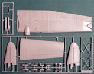
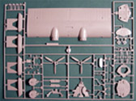

{kind=link}
{kind=link}
{kind=link}
{kind=link}
{kind=link}
{kind=link}
{kind=link}
{kind=link}


Monogram 1/48 PBY-5A Catalina
Kit #4803 Collector�s Market Value $29.75
Images and text Copyright � 2005 by Matt Swan
Developmental Background
In October 1933 the US Navy contracted Consolidated and Douglas to build competing prototype flying boats that offered greater range and load-carrying capability than the Consolidated P2Y or Martin P3M that were in service at the time. Designated XP3Y-1 and XP3D-1 respectively, only a single prototype of the Douglas design was built. However, Consolidated's XP3Y-1 was to be developed into the most extensively built flying boat in aviation history.
The power plant for the prototype consisted of two 825 hp Pratt & Whitney R-1830-54 Twin Wasp engines mounted on the wing leading edges. Armament comprised four 30 caliber machine guns and up to 2,000 lb of bombs. First flown on 28 March 1935, the XP3Y-1 was soon transferred to the US Navy for service trials, which confirmed a significant improvement in performance over the patrol flying boats then in service. Over the next year several design modifications were incorporated into the aircraft including newer, more powerful engines and a redesigned tail surface. By October 1936 the first US Navy squadron was outfitted with the PBY-1. Minor equipment changes, further improved engines, hatch redesigns and improved turret design over the next few years resulted in the PBY-5, which was put into service in 1941.
The PBY was used extensively for aerial scouting, search and rescue as well as submarine interdiction during the war. Countless Naval aviators owe their lives to this aircraft. Affectionately called �Dumbos� the Catalina could land in water, pick up survivors and take off again in a matter of minutes. The aircraft was not only manufactured by Consolidated (about 700 units) but also built under license by Boeing Aircraft of Canada and Canadian Vickers. Boeing production totaled 362 aircraft, these comprising 240 PB2B-1s supplied to Australia, Britain and New Zealand. Orders were received from France in 1940 but were never delivered. Aircraft produced by Canadian Vickers totaled 379 equivalent to the PBY-5A, of which 149 were supplied to the RCAF. It is estimated that nearly 4000 were manufactured in Russia as the GST.
Today there are still many PBYs is service around the world along with several finely restored examples in museums.
The Kit
This is a big model kit, let there be no doubt about that. Yes, it�s a twin-engine aircraft but this model falls into the basic size category of the 1/48 B-17, B-24 and Lancaster. The box that it arrives in is exactly the same dimensions of these other kits as well. The box is of heavy gauge cardboard with interior reinforcement that ensures it will not be crushed in shipment and will be able to survive on the bottom of your stash. Inside we have a large collection of parts, several trees with nearly all having their own protective poly bags.
The light gray polystyrene pieces all show nice, crisply engraved panel lines and rivet detail. There are some raised details as well like a docking rope wrapped around the nose. This particular detail is somewhat heavily overdone and the modeler might want to consider shaving in off and replacing it with something a little more to scale. There is little or no flash evident on any of the parts and there are not any noticeable sinkholes or severe injector pin markings. The main fuselage halves have some slight warpage and take some fiddling with to make them meet properly. The interior area of the cockpit and the waist gunner�s bay are well detailed and we get a separate tree of parts devoted entire to crewmembers; a pilot, co-pilot and two gunners. The massive parasol wing consists of five large pieces with explicit directions indicating the correct order of assembly. All control surfaces are molded in a neutral position.
Included in the kit are separate parts to build the landing gear in the extended or stowed position. The wingtip floats can be modeled in either position also. Some armament is included in the form of four under wing depth charges but these are inaccurate. They all have flat noses that should be round. The large sprue of clear parts covers the basic pieces for a PBY-5A and includes an optional �bug eye� turret. The model kit contains 122 pieces for the general aircraft construction, 16 pieces devoted to the crew and 21 clear pieces for a total inventory count of 159 pieces in the box.


You may click on the thumbnails above to view larger images
Decals and Instructions
Revell has done a very nice job with the instruction packet for this model. It comes in the form of a full size (8-1/2� x 11�) booklet stapled at the binding. The cover page contains a good historical background on the aircraft along with the basic safety warnings and a complete paint chart. Paints are listed by name and federal standard number where possible and in both English and French. The next eleven pages contain twenty-five exploded view construction steps. These steps are full of part identifications, painting instructions and specific assembled views. Four pages of exterior painting schemes and decal placement instructions for two different aircraft follow this.
This kit comes with a nice, big sheet of decals. Print registry appears to be good for all decals with the exception of the propeller logos that are off center. Color density is good and colors are vibrant. We get several service stencils some of which are provided in both black and white. If you are not into painting and detailing instrument panels there is an option to use a decal here instead. The markings in general are for either the �Snafu Snatchers� in Naval blue/gray for the Pacific Theater or the 4th Rescue Squadron with a red tail and red and yellow wings.
Conclusions
This is a nice model kit. It is a bit of a complex build but even without the use of aftermarket items will make into a stunning model. The general parts fit is good other than some slight warpage in the fuselage. Parts are clean, generally free of flash, instructions are very well done, and decals cover the two offered examples well. The original �Snafu Snatchers� resides at Wright Patterson in Dayton Ohio and I had the opportunity to visit it a few months ago so thought I would share that with you � yeah the fat guy is yours truly.
On the aftermarket there are quite a few detail options available to the modeler. There are many different decal options from Aussie Decals, Aeromaster Products, Dutch Decals, FCM Decals, Flightline Decals, Yellowhammer and Yellow Wings. Mask sets can be found from Cutting Edge and Eduard. Moskit offers a variety of upgrades and conversion for the PBY and so does Belcher Bits. Basically what I�m saying you is that you could conceivably model just about any version of this aircraft and in many different markings. Considering the base quality of the kit and variety of aftermarket options, how could you not have one of these in your collection?